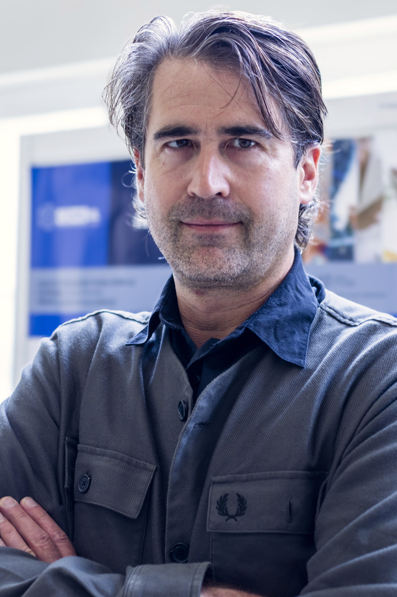

Professor Associado com Agregação
Department of Mathematical Sciences
Faculty of Sciences, University of Lisbon
Portugal
Mathematical Modelling in Mechanics • Fracture • Dislocations • Calculus of Variations • PDEs
Download CV
I am Associate Professor at the Department of Mathematical Sciencers of the Faculty of Sciences, University of Lisbon, and researcher at CEMSUL.
My research focuses on the mathematical modelling, analysis, and numerical simulation of defects in materials and structures. I work at the intersection of continuum mechanics, applied analysis, and materials science, with interests spanning elasticity, elasto-plasticity, fracture, damage, and dislocation theory.
My approach combines variational methods, partial differential equations, geometric measure theory, differential geometry, and topological sensitivity analysis to develop rigorous mathematical frameworks for solids with defects and evolving microstructures.
Elasticity, elasto-plasticity, constitutive modeling, thermodynamics, and incompatibility-governed models for defects in solids. Includes geometric measure theory and non-Riemannian geometry of crystals.
Geometric and analytical descriptions of defects in crystalline solids. Variational evolution of dislocations, Cartesian currents, and topological singularities.
Variational and computational approaches to crack initiation and propagation. Topological derivatives, shape optimization, and hydro-mechanical fracture modeling. Collaboration with engineers for computational applications.
Γ-convergence, relaxation, homogenization, and free-discontinuity problems. Applications to image processing and PDEs with Amstutz and Novotny. Includes bounded deformation and incompatibility operators.
For a complete publication list, see my CV and research profiles.
(
Department of Mathematical Sciences
Faculty of Sciences, University of Lisbon
Campo Grande, Edifício C6
1749-016 Lisboa, Portugal
Email: nvgoethem@ciencias.ulisboa.pt
ORCID: 0000-0002-5356-8383